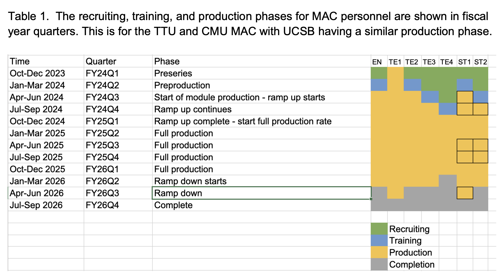

Module assembly at CMU
https://cms-docdb.cern.ch/cgi-bin/DocDB/ShowDocument?docid=13032
8796 full-size modules are required on the entire CE-H detector of which
- 924 are HD full-size modules that will be assembled at UCSB.
- CMU will build 4240 LD : 120 losses to give 4120 LD : 3936 + 184 (test beam ?) Pre-production: Produce 360 with 240 modules being usable 5.8%
The cost of consumables and disposable items (HEPA filters, glue, epoxy, cleanroom overalls, gloves, galoshes, etc.) is borne by the project at an estimated cost of $34k per year based on prototyping experience we assume a total of about 18 months of active cleanroom usage during module production.
Prototype-2 also called Pre-series
- For both prototype cycles we account for technicians for module assembly on the gantry and wire-bonding, as well as a senior electrical engineer for assembly oversight.
PreProduciton
The pre-production of standard modules will consist of 240 modules (about 5%)
Production
12 modules / day
- 1 FTE (senior engineer) for module QC, rework, supervising technicians, students, overall work oversight, and scheduling of workflow, (JS)
- 1 FTE (junior technician) for module assembly on the gantry, (JR)
- 1 FTE (senior technician) for wire-bonding modules, (AS)
- 1 FTE (junior technician) for encapsulation and support operations on gantry and wire-bonder (Josh)
- 1 FTE (junior technician) for receiving, inspection, stocking of parts, packing of completed modules, shipping, and overall cleanroom maintenance, (OP)
- 2 FTE (undergraduate student) for module QC: single module testing, multi module tests including thermal cycling, data analysis, database entry,
- 1 FTE (graduate student - uncosted) supporting multi module testing and thermal cycling
- 0.5 FTE (postdoc - uncosted) to supervising undergrads & analyze collected QC data, trend analysis
- 0.25 FTE (scientist - uncosted) for associated work oversight work

The CMU module assembly site will produce 12 modules per day for a total of 324 modules per 8% batch
8% batches are arranged in blocks of 30 days duration each containing 27 days of effort
a 11 such 8% blocks of production plus durations of 15 and 20 days (107 and 123 hours) of labor for the 6-8% and 97-100% batches, respectively.
n of ~70 (~7) weeks corresponding to 2464 (123) labor hours for the production of the 3696 (184) standard production (test-beam) modules